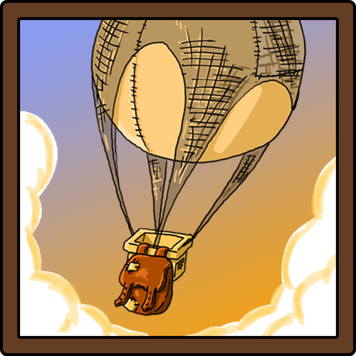

Hi,
I’m a German game design student from Munich. I’ve been studying since summer 2015. Since then I had a shot at
every aspect of game-making there is. Game design, programming, drawing, modeling, compositing, you name it…
It
took me quite a while to figure out which part of the business I was most interested in. Eventually I was able to boil
my preferences down to three aspects:
- I’ve always loved to act as a bridge between team departments and make sure everybody was working towards the same goal
- The way games communicate ideas and concepts to the player was always a major design priority in my eyes
- The roles I adopted in student projects were always related to both high level game design and programming
Skills/Experience
Game Engines

GameMaker Studiointermediate |

Unityadvanced |

Unreal Enginefundamental |
Programming Languages
C++basic |
Javaintermediate |
C#advanced |
HTML + CSSfundamental |
Career
-
Internship at your company
Interested?
Contact me...
-

Student Assistant at Mediadesign Hochschule München
Field of work: IT Support, Programming, Paperwork
-
University: Gamedesign, B.Sc. at Mediadeisgn Hochschule München
The studies have an elevated focus on practical application:
There are 4 project phases (each lasting 1-2 months) and a 5-6 month internship in the 5th semester.
-

Highschool: Michaeli-Gymnasium München
I aquired my Abitur / University-Entrance Diploma (2.2) in 2015
Final written exams:
English, German and Maths
Final colloquial exams: Computer Sciences and Religious Education
Extracurricular activities:
Movie-Workshop (2007-13)
Industrial Product Design Course (2014-15)
Projects
Runecast Defender
Field of work: Programming, Game Design
|
|  |
Aeronauts
Field of work: Game Design, UX Design, UI Programming
A Zen-Like ExperienceThe biggest difference of Aeronauts compared to traditional strategy games is the complete absence of militarized fights. There are enemy encounters on the dungeon-islands, but they are optional up to the point when you decide to engage. This approach creates a very calm, zen-like experience that focuses solely on exploration and unit-management. One key component to achieve that goal is the resource tree which is inspired by the goods from The Settlers II. It is a relatively peaceful game when compared to major strategie competitors such as Age of Empires, Civilisation or the Anno series. The game feel is already pretty close to what we wanted to achieve for our game. However, the economy of the Settlers II is still centered around the military which is the driving force for everything. All the fortunes a player collects over the course of a game are spent to resolve military disputes. Gold coins which are used to recruit and train soldiers are the most expencive good. Unfortunately there is no civil equivalent to gold coins that is worth your time or resources. In Aeronauts we wanted to take a different route: Our resource tree is built around cloth which is substantial for everything else.  You can collect wood, stone and single food pickups on the Main Island (the one where you start the game and build all your buildings) and survive for a couple of years. You should not be fooled though: You have to consume a sizebale amount of this deposit to build an air balloon that in turn enables you to venture an expedition to one of the neighbouring 'dungeon-islands'. These islands are rich of resources and your main supply source throughout the game. The exploration of dungeon-islands naturally divides the game into 5-minute chunks of gameplay that are ideal for short mobile play-sessions. The flora and fauna of the dungeon-islands you encounter depends on the season during which you send off the expedition air-balloon. Granted you dispatch a balloon in the midst of Summer, you're most likely to encounter a sandy island full of palm trees and cactuses. |


 |
Feuer & Flamme
Field of work: 2D Art, UI
|

|
Dodgimals
Field of work: Game Design, Programming |